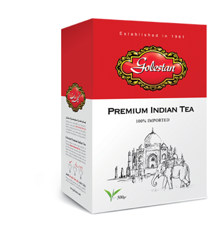

Golestan Tea
Sourced from the best tea estates on the banks of Brahmaputra River in Assam and Darjeeling, India, Golestan teas possess the smell and taste of traditional Indian teas.
Read more

With a history of more than 71 years, Golestan is presently one of the largest food companies in Iran. It blends, packs and sells teas as well as a wide variety of other types of food products, including rice, spices, pistachios, saffron and so forth. The company has 20 main groups of food and 550 sub-food items altogether.

Iranian rice is the most prime in the world. Tarem and Hashemi are the two most popular rice brands in the country. Tarem and Hashemi rice is grown in the best rice fields in the province of Mazandaran and after its quality is tested in Golestan laboratories, it is packed and sold. The smell and taste of Golestan rice are not comparable with those of rice produced by other companies.

Sourced from the best tea estates on the banks of Brahmaputra River in Assam and Darjeeling, India, Golestan teas possess the smell and taste of traditional Indian teas.
Read more
Pistachios are a rich source of vitamins and minerals which help protect heart and arteries. Other health benefits of pistachios include improved digestion, weight management, protection against diabetes and hypertension. Golestan pistachios are harvested from the best pistachio farms in Iran and then go through quality control in our laboratory. They are then roasted using saffron and salt.
Read more
Golestan has been involved in charity work and some of its charitable activities include but not limited to, the construction of a hospital, a charity and a number of schools and educational centers.
Read more